Latent variable models for the analysis of antibody density data
From non-spatial univariate to spatial multivariate
University of Birmingham
Lund University
Outline
- Part I. One antigen: a continuous latent seroreactivity replaces seropositive / seronegative
- Part II. Two antigens: three principles for where dependence enters, and the spatial extension
Part I
The dominant paradigm
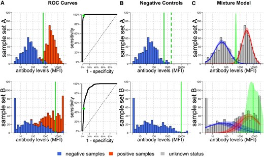
\[f(y) = \pi_0\, \mathcal{N}(y; \mu_0,\sigma_0^2) + \pi_1\, \mathcal{N}(y; \mu_1,\sigma_1^2)\]
- Individuals classified into two mutually exclusive states
- Which threshold to use?
- Choice should be context dependent
- Multiple antigens, multiple thresholds?
White, Baudemont et al. (2026). Whose Line Is it Anyway? Defining Seropositivity Cutoffs for Infectious Disease Surveillance. JID. doi.org/10.1093/infdis/jiaf537
A threshold-free approach: Latent variable models
Seroreactivity: degree of antibody reactivity, irrespective of any threshold.
Latent \(T \in [0,1]\)
- \(T \approx 0\): minimal activity
- \(T \approx 1\): saturated response
- \(Y \mid T=t \sim \mathcal{N}\big( (1-t)\mu_0 + t\mu_1,\; (1-t)\sigma_0^2 + t\sigma_1^2 \big)\)
Modelling \(T\): single distribution

Analogy: amount of DNA generated by a cell
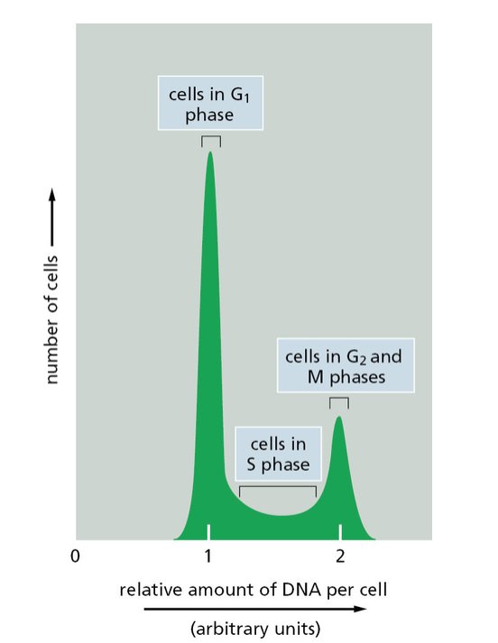
- Mass piles up at two boundary states: 2n (pre-replication) and 4n (post-replication)
- Cells in S phase occupy a genuine continuum in between
Taken from Alberts B, Johnson A, Lewis J, Morgan D, Raff M, Roberts K, Walter P (2015). Molecular Biology of the Cell, 6th edition. New York: Garland Science.
Modelling \(T\): mixtures
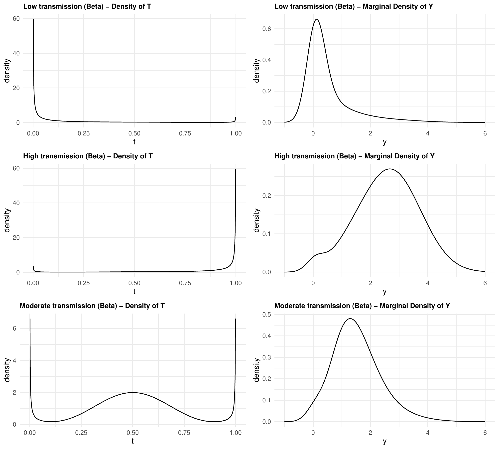
Age dependency
Recall the two ways of modelling \(T\):
\[ 1) \quad T \sim \text{Beta}(\alpha,\beta) \]
\[ 2) \quad T \sim \bigl(1-\pi(a)\bigr)\,\text{Beta}(t;\alpha_1,\beta_1) + \pi(a)\,\text{Beta}(t;\alpha_2,\beta_2) \]
Through the shape: \(\alpha(a)=\alpha_0 a^{\gamma}\), \(\beta(a)=\beta_0 a^{\delta}\)
the single Beta’s own shape parameters vary with age
Through the mixing weights: \(\pi(a) = 1-\exp(-\lambda a)\)
age shifts weight from the low- to the high-seroreactivity component
Application: malaria, Kenyan highlands
Rachuonyo South District, 2011 — IgG against AMA1 and MSP1 (Bousema et al., 2013, 2016).
Strategy: fix conditional parameters \((\mu_0,\mu_1,\sigma_0^2,\sigma_1^2)\) from the youngest age group, then re-estimate only \(T\)’s distribution within each successive age band.
AMA1: age-stratified exploration
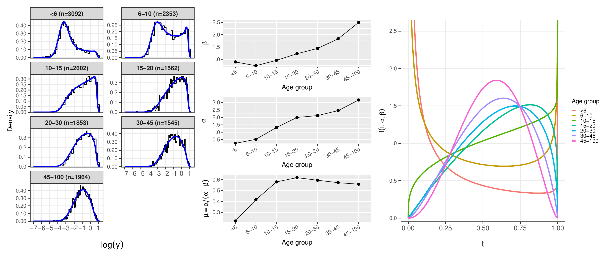
- Left: histograms and fitted densities by age band
- Middle: Beta shape parameters \(\alpha\), \(\beta\) and their mean across age
- Right: fitted Beta densities of \(T\) by age band
AMA1: model specification
A change point \(\tau\) separates two regimes, with the mean of \(T\) kept continuous across it.
Below \(\tau\) — mechanistic, with a degenerate mass at \(T=0\):
\[ f_T(t;a) = \begin{cases} 1-\pi(a), & t=0\\[4pt] \pi(a)\,\alpha_2\, t^{\alpha_2-1}, & 0<t<1 \end{cases} \qquad \pi(a) = 1-\exp(-\lambda a) \]
Above \(\tau\) — empirical Beta with logit-linear mean:
\[ T \sim \text{Beta}\big(\mu(a)\phi,\,[1-\mu(a)]\phi\big), \qquad \text{logit}\{\mu(a)\} = \eta_0 + \eta_1\log(a) \]
- Continuity constraint: \(\eta_0 = \text{logit}(\mu_{\tau^-}) - \eta_1\log(\tau)\)
- \(\hat\tau = 20.8\) years — mechanistic model appropriate up to about age 20
- \(\hat\lambda = 0.148\) — roughly half of children have initiated a response by age 5
- \(\hat\eta_1 < 0\) — modest decline in mean seroreactivity at older ages
AMA profile
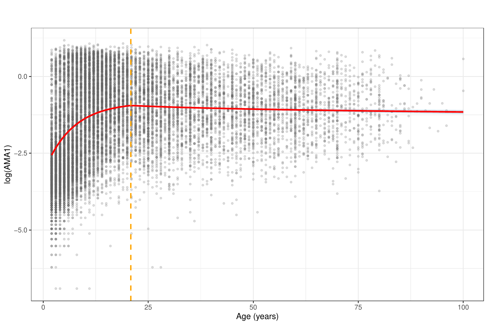
AMA1: goodness of fit

- Envelope of histograms simulated from the fitted model vs. the observed histogram
- Good agreement across most age bands
- Slight overstatement of high-antibody individuals in the youngest groups
MSP1: age-stratified exploration
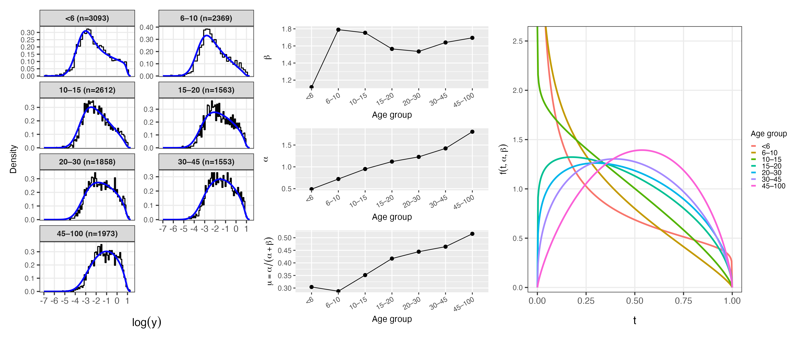
- Same three-panel layout as AMA1: histograms, shape parameters, fitted Beta densities
- \(\alpha\) rises with age as for AMA1; \(\beta\) stabilises after age 10
- Separation between low- and high-response groups weakens more slowly than for AMA1
MSP1: model specification
A single Beta throughout, with both shape parameters varying with age:
\[ T \sim \text{Beta}\big(\alpha(a),\,\beta(a)\big), \qquad \alpha(a) = \alpha_0\, a^{\gamma}, \qquad \beta(a) = \beta_0\, a^{\delta(a)} \]
with a change point \(\zeta\) in the exponent of \(\beta\):
\[ \delta(a) = \begin{cases} \delta_1, & a \le \zeta\\[4pt] \delta_1+\delta_2, & a > \zeta \end{cases} \qquad \mathbb{E}[T] = \left(1 + \tfrac{\beta_0}{\alpha_0}\, a^{\delta_1+\delta_2-\gamma}\right)^{-1} \]
- \(\hat\gamma = 0.277 > \hat\delta_1 = 0.110\) — \(\alpha(a)\) grows faster, so \(\mathbb{E}[T]\) rises steadily
- \(\hat\zeta = 11.6\) years, \(\hat\delta_2 = -0.061 < 0\) — \(\beta(a)\) slows, accelerating the rise
- Saturation would require \(\delta_1+\delta_2 \approx \gamma\); it does not occur here
- Contrast with AMA1: a data-driven rather than mechanistic specification
MSP profile
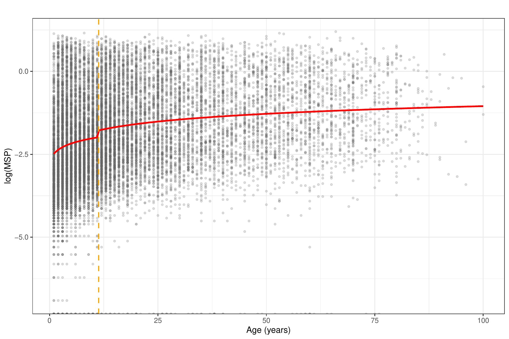
MSP1: goodness of fit
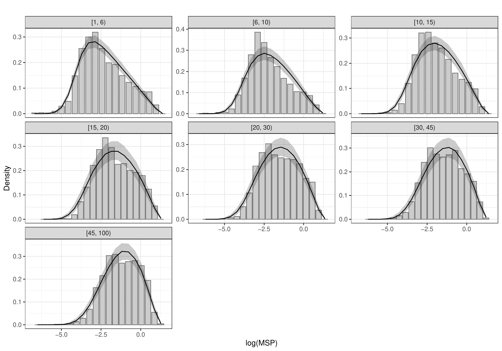
- Same envelope comparison as for AMA1
- Model tracks the observed histograms closely across all age bands
- No systematic bias, unlike AMA1’s youngest bands
LBM vs GMM: how much better is the latent model?
BIC comparison, age-stratified, both fitted with MLE (positive \(\Delta\)BIC favours the latent model):
| Antigen | Age band | \(\Delta\)BIC |
|---|---|---|
| AMA1 | \(6\)–\(10\) | 45 |
| AMA1 | \(20\)–\(30\) | 700 |
| AMA1 | \(45+\) | 1394 |
| MSP1 | \(<6\) | 42 |
| MSP1 | \(20\)–\(30\) | 259 |
| MSP1 | \(45+\) | 459 |
- The latent Beta model outperforms the GMM in every single age band, for both antigens
- The advantage for AMA1 grows sharply with age, exceeding 1000 BIC units in older groups
- MSP1 gains are more modest — the GMM adapts reasonably well here, but the latent model still wins throughout
- The \(L_2\) histogram approximation reproduces the same ranking as MLE, at a fraction of the computational cost
Part II
Developing a multivariate framework
Dependence in multi-antigen serology operates at two levels:
- Within an individual — shared infection event, shared immunology
- Between individuals — shared exposure environment
No existing framework handles cross-antigen correlation, age dependence and spatial dependence together for non-Gaussian, multimodal outcomes.
Notation for two antigens
For individual \(i\) and antigen \(k \in \{1,2\}\):
- \(\mathbf{Y}_i = (Y_{i,1}, Y_{i,2})^\top\) — the pair of log-antibody concentrations
- \(\mathbf{T}_i = (T_{i,1}, T_{i,2})^\top \in (0,1)^2\) — the pair of latent seroreactivities
- \(\mathbf{Z}_i = (Z_{i,1}, Z_{i,2})^\top \in \{0,1\}^2\) — component labels, low or high regime per antigen
- \(\mathbf{d}_i\) — covariates, with age \(a_i\) written separately where it matters
The question the principles answer: where in this hierarchy does each source of dependence belong?
P1 — Dependence lies in the latent process
The observation model describes assay characteristics, not biology
Conditional on \(\mathbf{T}_i\), the two antibody measurements are independent:
\[ p(\mathbf{y}_i \mid \mathbf{T}_i = \mathbf{t}) = \prod_{k=1}^{2} \mathcal{N}\big\{y_{i,k};\, \mu_k(t_{i,k}),\, \sigma_k^2(t_{i,k})\big\} \]
Implication: all cross-antigen dependence is carried by the joint density \(g(\mathbf{t}\mid\mathbf{d}_i)\) — nothing is left in the observation model
When it fails: antibody cross-reactivity would induce correlation in \(\mathbf{Y}\) unrelated to \(\mathbf{T}\), requiring a residual covariance term instead
P2 — Exposure and magnitude are separate
Exposure determines the probability of mounting a high response
Individual immunology determines the magnitude, given exposure
Implication: a mixture for \(\mathbf{T}_i\) is the natural choice, since it provides two distinct places to put them
\[ \mathbf{T}_i \mid \mathbf{Z}_i = \mathbf{z} \;\sim\; \mathcal{N}_{(0,1)^2}\big\{ \mathbf{m}(\mathbf{d}_i;\mathbf{z}),\, \Sigma_T \big\} \]
exposure → the mixing probabilities \(\pi_i(\mathbf{z})\); magnitude → the component locations \(\mathbf{m}(\mathbf{d}_i;\mathbf{z})\)
Consequence: spatial variation, being variation in the force of infection, enters only the mixing probabilities
P3 — Distinct scales, distinct structures
Shared infection event, within an individual
→ \(\delta(a_i)\) in \(\Pr(Z_{i,2}=1 \mid Z_{i,1}=z_1)\), the association between component labels
Shared within-host processes, within an individual
→ \(\rho_T\), the correlation in \(\Sigma_T\) once the labels are fixed
Shared exposure environment, between individuals
→ \(\rho_S\), the cross-correlation of the fields \(\{S_1(\mathbf{x}), S_2(\mathbf{x})\}\)
- Implication: each mechanism that induce dependence is governed by its own parameter
The latent unit square
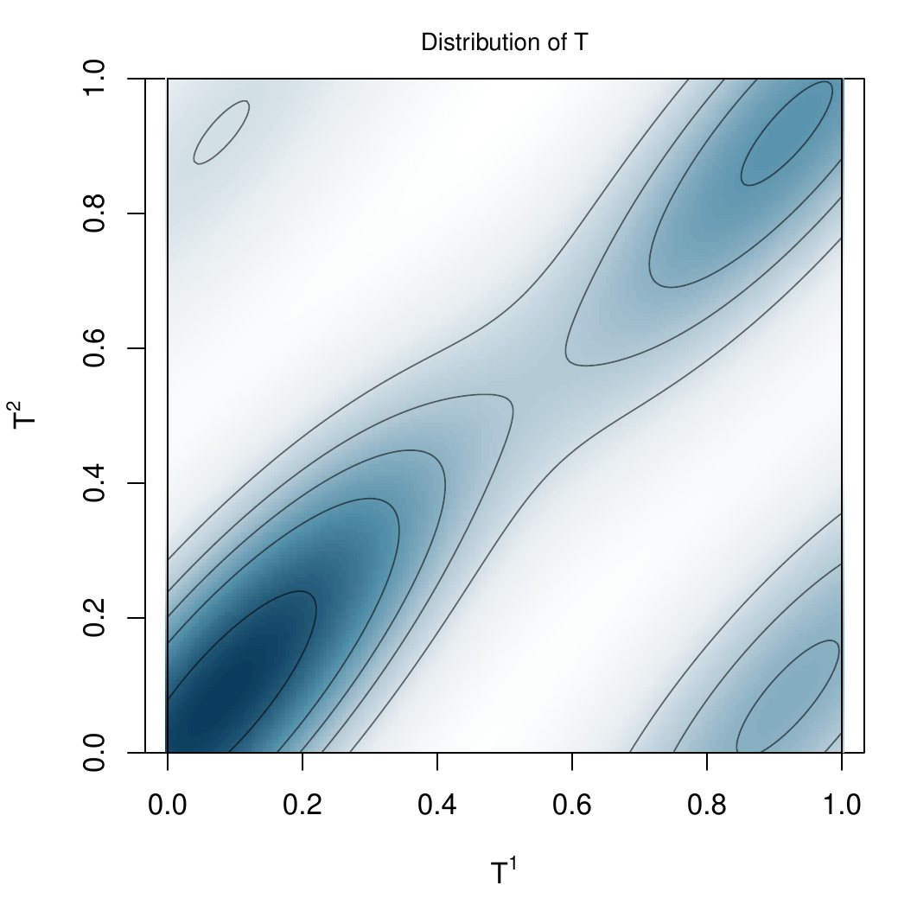
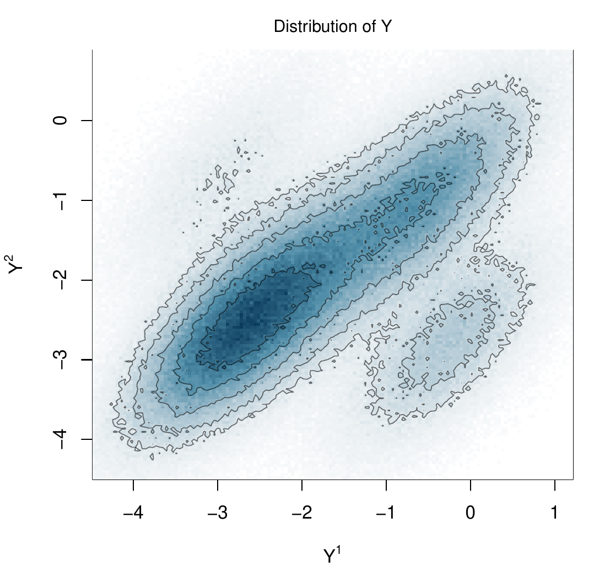
Mass concentrates on the diagonal, with an off-diagonal tail.
Correlation between AMA1 and MSP1: Estimates
| Quantity | Estimate | 95% CI |
|---|---|---|
| Spatial range, AMA1 | 473 m | (353, 639) |
| Spatial range, MSP1 | 437 m | (318, 577) |
| Cross-field \(\rho_S\) | 0.587 | (0.453, 0.711) |
| Within-component \(\rho_T\) | 0.717 | (0.691, 0.750) |
| Age effect \(\delta_1\) | 0.286 | (0.211, 0.339) |
- Residential-scale clustering of transmission
- Substantial spatial co-localisation of the two antigens
- Cross-antigen association strengthens with age
Bivariate fit: age-stratified validation
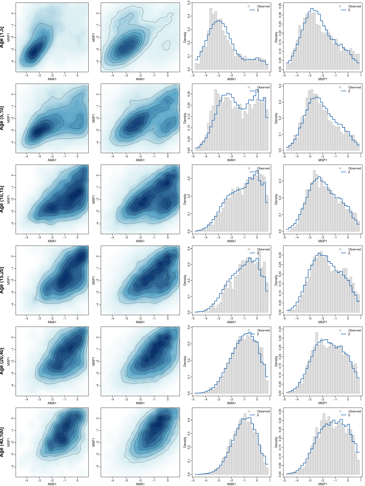
Spatial predictions
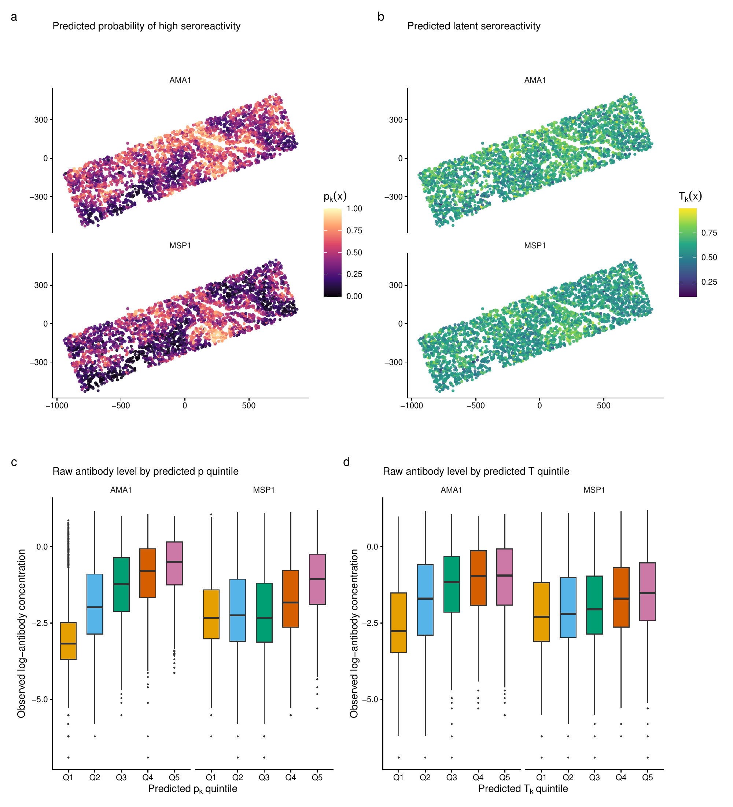
Does joint modelling help?
Coarsened total variation distance for the joint distribution:
| Age band | Univariate | Joint |
|---|---|---|
| \([1,5]\) | 0.295 | 0.189 |
| \((20,40]\) | 0.225 | 0.083 |
| All ages | 0.194 | 0.078 |
- Univariate models stay slightly better on the marginals — as expected
- Joint model → 12.6% smaller bivariate HDR at the same coverage
- Simulation: most predictions gains are shown in the inferences for \(T\)
Joint modelling matters if we are answering research questions that involve joint properties of antibodies
Discussion: going beyond two antigens
The sequential construction extends directly by adding conditional terms \(\delta_{jk}(a_i)\). The harder questions are epidemiological.
Does the pathogen structure matter? Whether the antigens belong to one pathogen or several has direct implications for how cross-antigen association should be modelled
Disease-agnostic approach. Impose no prior structure on the correlations and let the data determine the full pattern of dependence
Assumption-driven approach. Impose a parsimonious structure informed by biology, for example allowing association only among antigens sharing a pathogen or a transmission route
The principles adapt. P3 as stated assumes a shared pathogen and life-cycle stage; for antigens from distinct pathogens the shared-infection pathway no longer applies and \(\delta(a)\) should be left unconstrained
Computation is the binding constraint. The approximations used here are adequate for a bivariate outcome but unlikely to scale to tens of antibody responses
Extending to a handful of antigens from the same pathogen is relatively straightforward. A genuinely multivariate formulation would need to be tailored to the epidemiological context.
Summary
- Latent seroreactivity provides a flexible and biologically intepretable way to model continuous measurements of antibody concentration
- Three principles keep the multivariate extension interpretable and identifiable
- The gains of joint modelling are dependent on the research question
THANK YOU!

References
Giorgi, E. and Wallin, J. (2026). A flexible class of latent variable models for the analysis of antibody response data. Biostatistics, Volume 27, Issue 1, January 2026, kxag008, https://doi.org/10.1093/biostatistics/kxag008
Giorgi, E. and Wallin, J. (2026). Bivariate geostatistical latent variable models for the analysis of antibody density data. Pre-print available at https://arxiv.org/abs/2608.27534
Let’s Connect
🔗 giorgistat.github.io
📧 e.giorgi@bham.ac.uk
📍Department of Health Sciences, University of Birmingham, Birmingham, UK